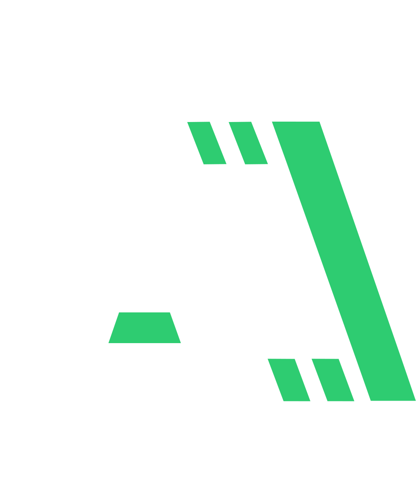

{% load static %}
<!DOCTYPE html>
<html lang="nl">
<head>
    <meta charset="UTF-8">
    <meta name="viewport" content="width=device-width, initial-scale=1.0">
    <meta name="color-scheme" content="light">
    <title>{% block title %}{% endblock %} - Atilla Oomen</title>
    <link rel="stylesheet" type="text/css" href="https://cdn.jsdelivr.net/gh/devicons/devicon@latest/devicon.min.css" /> <!-- Icons for programminglanguages -->
    <link rel="stylesheet" href="{% static 'css/main.css' %}">
    <link rel="icon" href="{% static 'images/logo_cv.svg' %}" type="image/svg+xml">
    <script type="module" src="{% static 'js/dist/main.js' %}" defer></script>
</head>
<body data-page="{% block page %}{% endblock %}" data-project_name="{% block project_name %}{% endblock %}">

    <div id="page-loader">
        <canvas id="page-loader-stars"></canvas>
        <div id="page-loader-content">
            
        </div>
    </div>

    <canvas id="stars"></canvas>
    {% include "components/layout/header.html" %}
    <main>
        {% block content %}
        
        {% endblock %}
    </main>
    {% include "components/layout/footer.html" %}
</body>
</html>